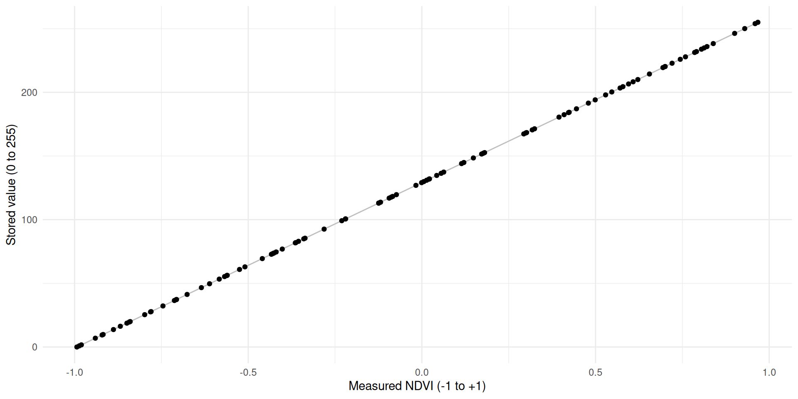
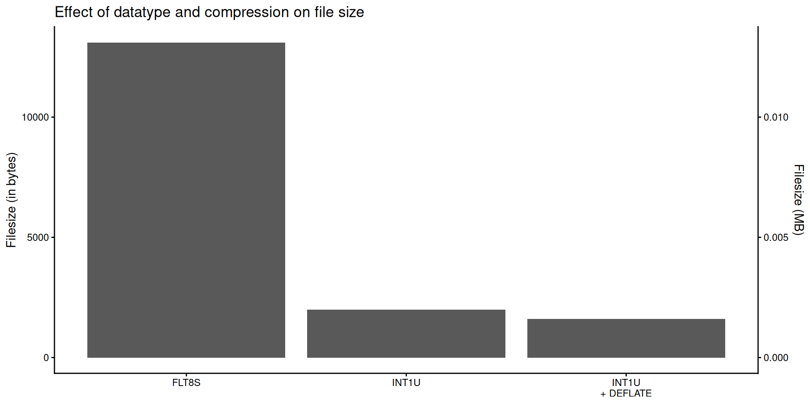
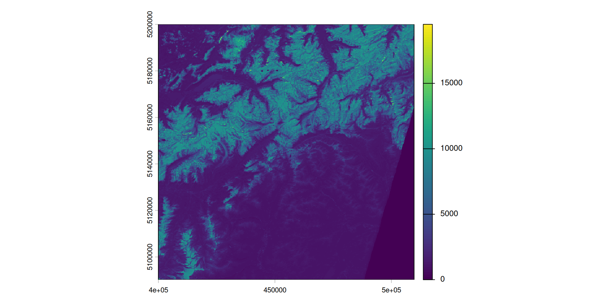
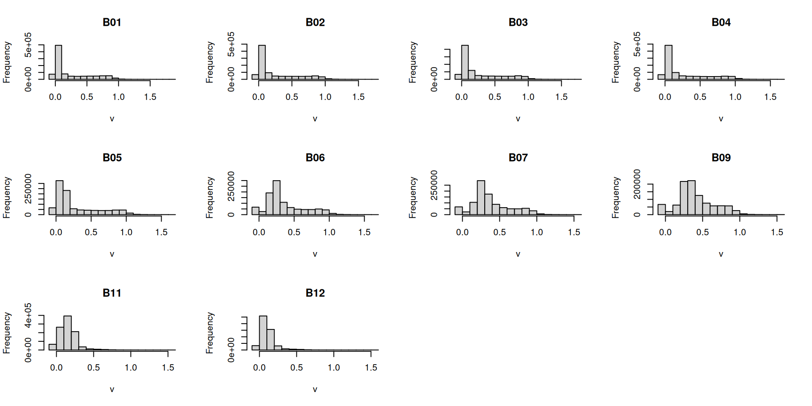
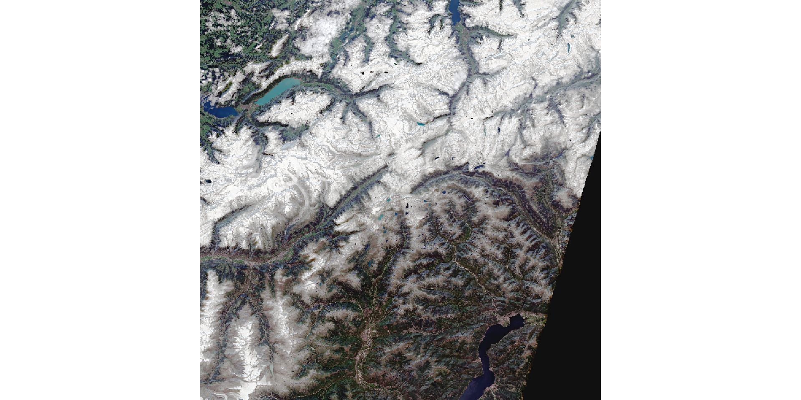
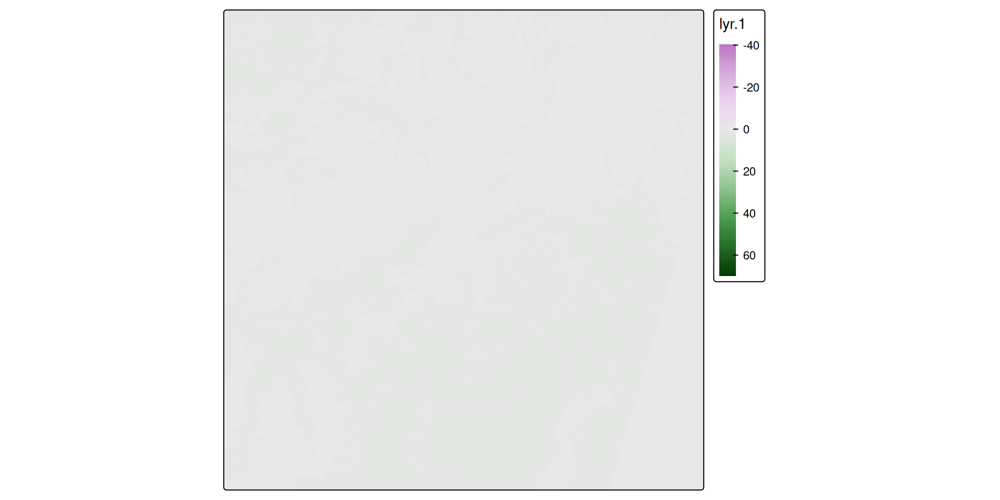
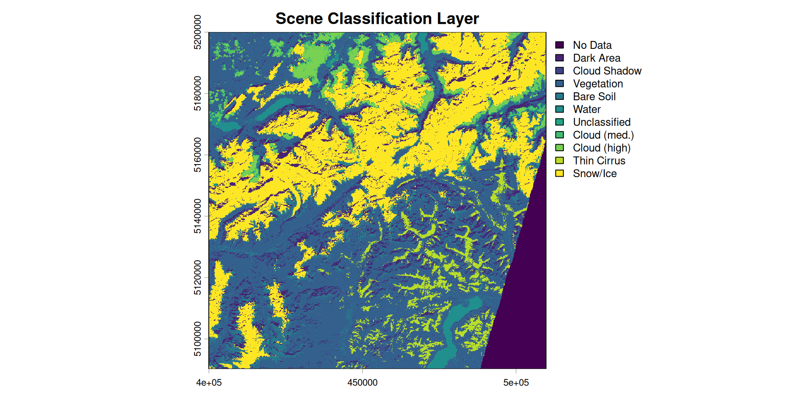
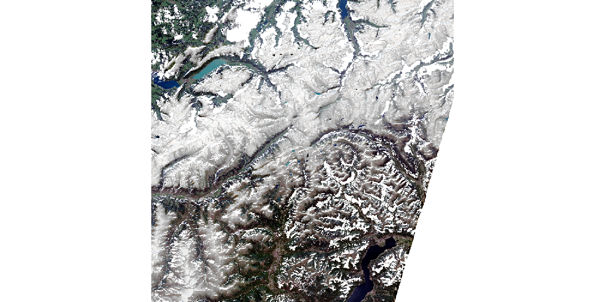

Sentinel Data
Types, Signatures & Preprocessing
Learning Objectives
By the end of this lesson you will be able to:
- Explain GDAL data types and choose the right type for a given value range
- Use scale and offset to store data compactly without loss of meaningful precision
- Navigate the Sentinel-2 SAFE format and import bands in R
- Convert raw Digital Numbers (DN) to surface reflectance values
- Apply the SCL band to mask clouds and produce a cloud-free image
- Apply a data pipeline from download to analysis-ready raster
Data Types, scale and offset
Why this matters
- Storage space!
- Sentinel-2 bands are stored as raw integers (UInt16, values ~0–15000)
- The conversion to surface reflectance requires a scale and offset — documented in a separate XML file
- GDAL reads individual JP2 files, not the full product → the conversion is never applied automatically
- To work with S2 data correctly, we need to understand what scale and offset are and how to apply them
Raster data types
- Raster data is always stored as numeric
- GDAL defines the supported types — shared by R, Python, QGIS
- In memory: R/Python types; on disk: GDAL types
- Choice of type affects file size and precision
Raster data types
gdal (source: Amatulli)
| Data type | Minimum | Maximum | Size1 | Factor |
|---|---|---|---|---|
| Byte | 0 | 255 | 39M | 1x |
| UInt16 | 0 | 65,535 | 78M | 2x |
| Int16, CInt16 | -32,768 | 32,767 | 78M | 2x |
| UInt32 | 0 | 4,294,967,295 | 155M | ~4x |
| Int32, CInt32 | -2,147,483,648 | 2,147,483,647 | 155M | ~4x |
| Float32, CFloat32 | -3.4E38 | 3.4E38 | 155M | ~4x |
| Float64, CFloat64 | -1.79E308 | 1.79E308 | 309M | ~8x |
Choosing a data type
- Naively: value range determines the datatype
- Better: transform values to fit a smaller type
- Example: NDVI ∈ [−1, 1] → rescale to [0, 255] → store as
Byte
Rescaling / Transforming values
Min-max normalization maps any range \([\min(x), \max(x)]\) to a target range \([a, b]\):
\[x' = a + \frac{(x-\min(x))\times(b - a)}{\max(x)-\min(x)}\]
For NDVI ∈ [−1, 1] rescaled to [0, 255]:
- \(x\) — measured value, \(x'\) — stored value
- \(a = 0\), \(b = 255\) — target range
- \(\min(x) = -1\), \(\max(x) = 1\)
- We can use these values and simplify the formula as follows:
\[\begin{align} x' &= 0 + \frac{(x+1)\times 255}{2} \\ x' &= \frac{255x+255}{2} \\ x' &= 127.5x+127.5 \\ \end{align}\]
- Formula: \(x' = 127.5x + 127.5\)
- Example: NDVI \(0.2\) → stored as \(153\)
- Two parameters describe the rescaling:
- \(x' = x \times \underbrace{127.5}_{\text{scale}} + \underbrace{127.5}_{\text{offset}}\)
Precision (and lack thereof)
- Only 255 distinct values → limited precision
- Precision = \(\frac{1}{\text{scale}} = \frac{1}{127.5} \approx 0.008\)
- Every stored NDVI is rounded to the nearest \(0.008\)
- Is this enough? → depends on the use case
R Implementation for vectors
scale_minmax()applies the formula to a numeric vector:

Restoring the original values
- A colleague receiving your file needs to know how to get back the original values
- Invert the transformation using
scaleandoffset: \[x = \frac{x' - 127.5}{127.5}\]
R implementation for rasters
- GDAL supports scale/offset natively (pass directly to
writeRaster()) - Values are stored in file metadata and recognized during import
- Formulas to derive them from the value range:
\[\begin{align} \text{scale} &= \frac{b - a}{\max(x)-\min(x)} \\ \\ \text{offset} &= \frac{a \times \max(x) - b \times \min(x)}{\max(x)-\min(x)} \end{align}\]
Note:
- \(a\) and \(b\) refer to the target range
- min and max could either be the theoretical or practical extremes: What are pros / cons of using either?
scale offset
127.5 127.5 scale offset
127.5 127.5 R implementation for rasters
scoff_params()works for vectors, but needs two adjustments for rasters:min()/max()return per-cell values → useminmax()for global min/maxwriteRaster()divides byscaleand subtractsoffset→ both must be inverted
R implementation for rasters
Let’s import a raster, calculate the scale and offset values and use these values to write to disk
R implementation for rasters
- GDAL embeds
scaleandoffsetin the file metadata - On import, any GDAL-based software restores the original values automatically
- The stored
INT1Ubytes are invisible — you always get back the original range

Lossless Compression
- Even after choosing a compact datatype, files can be compressed further
- Lossless compression reduces file size without changing any pixel values — the original data is perfectly recoverable
- GeoTIFF supports several lossless algorithms via GDAL; DEFLATE is the most widely used
- Compression is transparent to readers: any GDAL-based software (R, QGIS, Python) decompresses automatically on load
- Combine datatype + compression for maximum savings:
INT1U + DEFLATEcan be 8× smaller than uncompressedFLT8S
Showcase: Importing Sentinel data
Download data
To download Sentinel data:
- Go to the Copernicus Browser website
- Login using your credentials
- Go to your area of interest
- Click on the “Search” Tab in the left panel
- In Data Source, select Sentinel 2 → L2A
- Choose your desired time frame
- Click on the “Search” button
- From the search results, download one or two scenes
Copernicus SAFE Format I
- Downloaded scenes come as a SAFE folder (distributed as
.zip) - Contains image bands as individual JP2 files + metadata in XML
- Key contents:
IMG_DATA/— band images at 10m, 20m, 60m resolutionGRANULE/— scene-level data and annotationsmanifest.safe— general product info
Copernicus SAFE Format II
The SAFE folder above includes the following content:
levelName
1 data-large
2 °--S2B_MSIL2A_20240915T102559_N0511_R108_T32TMS_20240915T131207.SAFE
3 ¦--DATASTRIP
4 ¦ °--DS_2BPS_20240915T131207_S20240915T102803
5 ¦ ¦--MTD_DS.xml
6 ¦ °--QI_DATA
7 ¦ ¦--FORMAT_CORRECTNESS.xml
8 ¦ ¦--GENERAL_QUALITY.xml
9 ¦ ¦--GEOMETRIC_QUALITY.xml
10 ¦ ¦--RADIOMETRIC_QUALITY.xml
11 ¦ °--SENSOR_QUALITY.xml
12 ¦--GRANULE
13 ¦ °--L2A_T32TMS_A039316_20240915T102803
14 ¦ ¦--AUX_DATA
15 ¦ ¦ ¦--AUX_CAMSFO
16 ¦ ¦ °--AUX_ECMWFT
17 ¦ ¦--IMG_DATA
18 ¦ ¦ ¦--R10m
19 ¦ ¦ ¦ ¦--T32TMS_20240915T102559_AOT_10m.jp2
20 ¦ ¦ ¦ ¦--T32TMS_20240915T102559_B02_10m.jp2
21 ¦ ¦ ¦ °--... (etc)
22 ¦ ¦ ¦--R20m
23 ¦ ¦ ¦ ¦--T32TMS_20240915T102559_AOT_20m.jp2
24 ¦ ¦ ¦ ¦--T32TMS_20240915T102559_B01_20m.jp2
25 ¦ ¦ ¦ °--... (etc)
26 ¦ ¦ °--R60m
27 ¦ ¦ ¦--T32TMS_20240915T102559_AOT_60m.jp2
28 ¦ ¦ ¦--T32TMS_20240915T102559_B01_60m.jp2
29 ¦ ¦ °--... (etc)
30 ¦ ¦--MTD_TL.xml
31 ¦ °--QI_DATA
32 ¦ ¦--FORMAT_CORRECTNESS.xml
33 ¦ ¦--GENERAL_QUALITY.xml
34 ¦ ¦--GEOMETRIC_QUALITY.xml
35 ¦ ¦--L2A_QUALITY.xml
36 ¦ ¦--MSK_CLASSI_B00.jp2
37 ¦ ¦--MSK_CLDPRB_20m.jp2
38 ¦ ¦--MSK_CLDPRB_60m.jp2
39 ¦ ¦--MSK_DETFOO_B01.jp2
40 ¦ ¦--MSK_DETFOO_B02.jp2
41 ¦ ¦--... (etc)
42 ¦ ¦--MSK_QUALIT_B01.jp2
43 ¦ ¦--MSK_QUALIT_B02.jp2
44 ¦ ¦--MSK_SNWPRB_20m.jp2
45 ¦ ¦--MSK_SNWPRB_60m.jp2
46 ¦ ¦--SENSOR_QUALITY.xml
47 ¦ °--T32TMS_20240915T102559_PVI.jp2
48 ¦--HTML
49 ¦ ¦--banner_1.png
50 ¦ ¦--banner_2.png
51 ¦ ¦--banner_3.png
52 ¦ ¦--star_bg.jpg
53 ¦ ¦--UserProduct_index.html
54 ¦ °--UserProduct_index.xsl
55 ¦--INSPIRE.xml
56 ¦--manifest.safe
57 ¦--MTD_MSIL2A.xml
58 ¦--rep_info
59 ¦ ¦--S2_PDI_Level-2A_Datastrip_Metadata.xsd
60 ¦ ¦--S2_PDI_Level-2A_Tile_Metadata.xsd
61 ¦ °--S2_User_Product_Level-2A_Metadata.xsd
62 °--S2B_MSIL2A_20240915T102559_N0511_R108_T32TMS_20240915T131207-ql.jpgThe bands are in IMG_DATA/ — one JP2 per band, at 10m, 20m, and 60m.
- Filter to spectral bands only (
B01–B12) - Extract band names from filenames with
str_split_fixed()
[1] "B01" "B02" "B03" "B04" "B05" "B06" "B07" "B09" "B11" "B12"- Test if the data is loaded correctly:

- Values range 0–15000 → not yet reflectance (see Section 2)
- GDAL hasn’t applied scale/offset automatically → we must do it manually
- The conversion formula is documented in
MTD_MSIL2A.xml:
\[DN = \rho \times Q - O\]
where \(Q\) = quantification value and \(O\) = radiometric add offset — let’s extract them:
Searching for QUANTIFICATION_VALUE in SAFE/MTD_MSIL2A.xml:
<QUANTIFICATION_VALUES_LIST>
<BOA_QUANTIFICATION_VALUE unit="none">10000</BOA_QUANTIFICATION_VALUE>
<AOT_QUANTIFICATION_VALUE unit="none">1000.0</AOT_QUANTIFICATION_VALUE>
<WVP_QUANTIFICATION_VALUE unit="cm">1000.0</WVP_QUANTIFICATION_VALUE>
</QUANTIFICATION_VALUES_LIST>Searching for ADD_OFFSET in SAFE/MTD_MSIL2A.xml:
<BOA_ADD_OFFSET_VALUES_LIST>
<BOA_ADD_OFFSET band_id="0">-1000</BOA_ADD_OFFSET>
<BOA_ADD_OFFSET band_id="1">-1000</BOA_ADD_OFFSET>
<BOA_ADD_OFFSET band_id="2">-1000</BOA_ADD_OFFSET>
<BOA_ADD_OFFSET band_id="3">-1000</BOA_ADD_OFFSET>
<BOA_ADD_OFFSET band_id="4">-1000</BOA_ADD_OFFSET>
<BOA_ADD_OFFSET band_id="5">-1000</BOA_ADD_OFFSET>
<BOA_ADD_OFFSET band_id="6">-1000</BOA_ADD_OFFSET>
<BOA_ADD_OFFSET band_id="7">-1000</BOA_ADD_OFFSET>
<BOA_ADD_OFFSET band_id="8">-1000</BOA_ADD_OFFSET>
<BOA_ADD_OFFSET band_id="9">-1000</BOA_ADD_OFFSET>
<BOA_ADD_OFFSET band_id="10">-1000</BOA_ADD_OFFSET>
<BOA_ADD_OFFSET band_id="11">-1000</BOA_ADD_OFFSET>
<BOA_ADD_OFFSET band_id="12">-1000</BOA_ADD_OFFSET>
</BOA_ADD_OFFSET_VALUES_LIST>- \(Q\) = 10’000, \(O\) = −1’000 → \(\rho = (DN - 1000) / 10000\)
- But are the resulting values physically plausible?
Out-of-range reflectance values

- Reflectance is bounded by definition: 0 (no reflection) to 1 (perfect reflection)
- Yet the histogram shows values both below 0 and above 1
Why are values out of range?
- Below 0 — ESA intentionally introduced a −1000 DN offset (processing baseline 04.00)
- Dark surfaces (deep water, shadows) can have slightly negative reflectance after atmospheric correction
- The offset shifts all DNs up to keep them positive on disk; subtracting it back out exposes those negatives
- These values are physically meaningful — clipping them to 0 alters real data
- Above 1 — clouds and saturated pixels exceed the calibration reference; these are true artefacts
- The proper fix for both is SCL masking: clouds (8, 9), shadows (3), and water (6) are flagged and excluded
- After masking, residual out-of-range values are rare; clipping is then a safe fallback

To calculate NDVI, we can create our custom function and apply it to the s2b object using app:

Cloud Masking with the SCL Band
Why clouds are a problem
- Clouds reflect strongly across all bands — a cloudy pixel does not represent the surface below
- Using cloudy pixels in analysis (e.g. NDVI, classification) introduces severe errors
- Sentinel-2 L2A includes a Scene Classification Layer (SCL) → per-pixel quality flag generated automatically during atmospheric correction
The Scene Classification Layer (SCL)
| Value | Class | Keep? |
|---|---|---|
| 0 | No Data | ✗ |
| 1 | Saturated / Defective | ✗ |
| 2 | Dark Area Pixels | ✗ |
| 3 | Cloud Shadows | ✗ |
| 4 | Vegetation | ✓ |
| 5 | Bare Soils | ✓ |
| 6 | Water | ✓ |
| 7 | Unclassified | ~ |
| 8 | Cloud, Medium Probability | ✗ |
| 9 | Cloud, High Probability | ✗ |
| 10 | Thin Cirrus | ✗ |
| 11 | Snow or Ice | ✓ |
Importing the SCL band
- The SCL band is stored as a separate JP2 file in the
R20mresolution folder (notR10m) - It follows the same naming convention as the spectral bands

Applying the cloud mask
# define which SCL classes are valid (cloud-free surface)
valid_classes <- c(4, 5, 6, 11)
# create a binary mask: TRUE where pixel is valid
cloud_mask <- scl %in% valid_classes
# apply to the reflectance stack
s2_masked <- mask(s2b, cloud_mask, maskvalues = FALSE)
# clip residual out-of-range values after masking
force_minmax <- \(x, min = 0, max = 1){ x[x < min] <- min; x[x > max] <- max; x }
s2_masked <- app(s2_masked, force_minmax)%in%tests membership cell-by-cell and returns a Boolean rastermask(..., maskvalues = FALSE)sets cells toNAwherever the mask isFALSE(i.e. cloudy)
Before and after masking


How much of the image is usable?
Valid pixels: 74.6%- If usable coverage is low, consider:
- Choosing a different date with less cloud cover
- Mosaicking multiple acquisitions from nearby dates
- Seasonal compositing: combine all cloud-free pixels from a season into one image